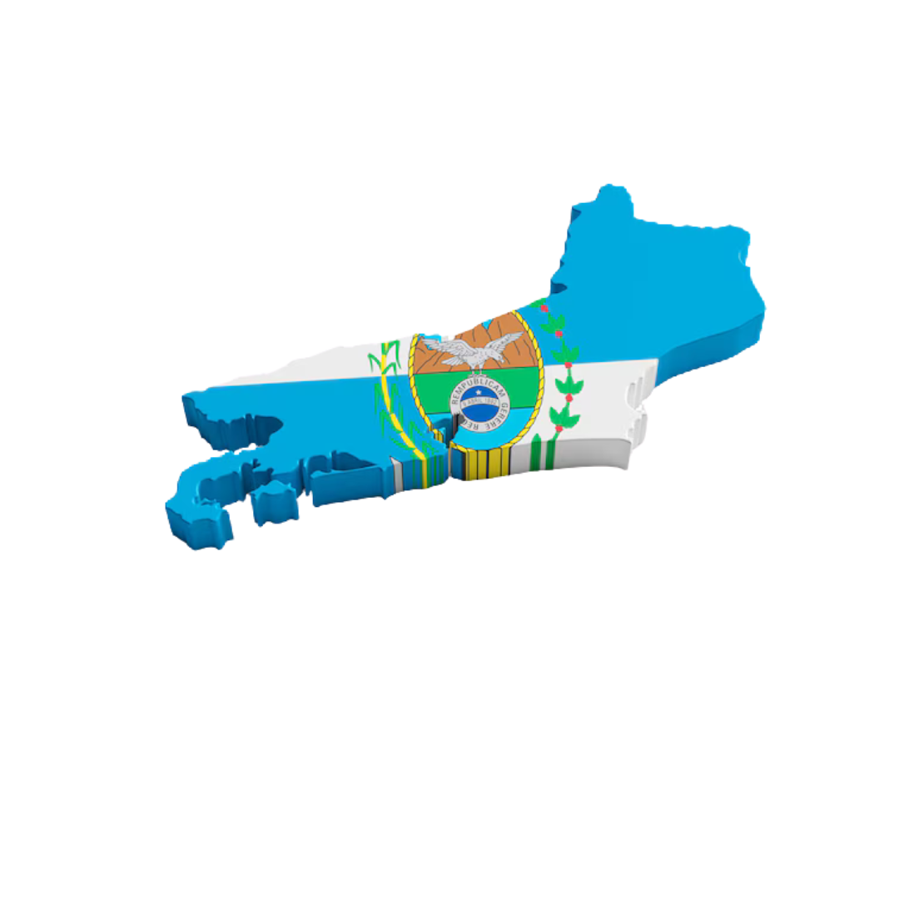

A principal atividade econômica da região é a extração de petróleo e gás natural, especialmente na Bacia de Campos, que responde por grande parte da produção nacional. Além dessa, Campos dos Goytacazes é o maior produtor de cana-de-açúcar do estado e ainda sustenta a economia de muitos municípios da região.
Petróleo: A Bacia de Campos, localizada majoritariamente no Norte Fluminense, responde por cerca de 70% da produção nacional de petróleo. Em 2022, o Brasil produziu 3,02 milhões de barris por dia (ANP - Agência Nacional do Petróleo), sendo aproximadamente 2,1 milhões de barris/dia oriundos dessa região.
Cana-de-açúcar: Segundo o IBGE (PAM 2022), o estado produziu 2,8 milhões de toneladas, com grande parte concentrada no Norte Fluminense.
Petróleo: Em 2021, o PIB da região Norte Fluminense foi impulsionado pelo setor de óleo e gás, com Campos dos Goytacazes gerando cerca de R$ 34,6 bilhões (IBGE, 2021).
Agropecuária: A cana-de-açúcar e a pecuária contribuem com cerca de R$ 1,5 bilhão anualmente ao PIB regional (estimativa baseada em dados do IBGE).
Petrobras (Principal exploradora de petróleo na Bacia de Campos), Indústrias de etanol (Compradoras da cana-de-açúcar para produção de açúcar e álcool) e o Mercado interno (Consumo de carne bovina e derivados).
Campos dos Goytacazes (Maior cidade e polo econômico do petróleo), Macaé (Conhecida como "capital do petróleo" devido às operações offshore), São João da Barra (Abriga o Porto do Açu, importante para logística).
A região Sul Fluminense destaca-se pela indústria siderúrgica, metalúrgica e automobilística, além de alguma produção agrícola como café e leite.
Aço: A Companhia Siderúrgica Nacional (CSN), em Volta Redonda, produziu cerca de 4,5 milhões de toneladas de aço em 2022 (dados da CSN).
Veículos: A planta da Stellantis (antiga PSA Peugeot Citroën) em Porto Real produziu cerca de 40 mil veículos em 2022.
Leite: Produção estimada em 300 milhões de litros/ano (IBGE, 2022).
Indústria: O PIB do Sul Fluminense foi de aproximadamente R$ 40 bilhões em 2021 (IBGE), com Volta Redonda contribuindo com R$ 14,8 bilhões.
Agropecuária: R$ 800 milhões anuais (estimativa IBGE).
Mercado internacional: exportação de aço (CSN exporta para EUA, Europa e Ásia).
Montadoras: Fornecedores locais e nacionais para a indústria automotiva.
Mercado interno: consumo de produtos lácteos e café.
Volta Redonda: Polo siderúrgico com a CSN.
Resende: Sede da MAN/Volkswagen Caminhões.
Porto Real: Abriga a fábrica da Stellantis.
A economia do Leste Fluminense é diversificada, mas alguns setores se destacam mais que outros:
Royalties de Petróleo: O estado do Rio responde por cerca de 70% da produção nacional de petróleo (aproximadamente 3 milhões de barris por dia em 2023).
Indústria Naval: Produção medida em embarcações ou toneladas de aço processadas (setor naval no Brasil produziu cerca de 200 mil toneladas de aço em embarcações em anos recentes).
Agropecuária: Produção diversificada (ex: cana-de-açúcar no estado foi de 1,5 milhão de toneladas em 2023).
Royalties de Petróleo: Maricá recebeu cerca de R$ 1,5 bilhão em royalties anuais (2023), e Niterói algo próximo de R$ 1 bilhão.
Indústria Naval: Setor naval no Brasil movimenta cerca de R$ 10-15 bilhões anuais.
Agropecuária: O estado do Rio produziu cerca de R$ 5 bilhões em valor agrícola em 2023.
Indústria Naval: Empresas de transporte marítimo, Petrobras e a Marinha.
Governo e Serviços Públicos: Reinvestimento dos royalties e da receita da indústria.
Cabo Frio: Polo turístico e de extração de sal.
Arraial do Cabo: Famosa pelas praias e turismo.
Saquarema: Destaque no turismo e royalties do petróleo.
A região Oeste, parte da Região Metropolitana e Zona Oeste da capital, é forte em indústria (alimentícia, química), comércio e turismo (na Barra da Tijuca). Inclui também agricultura de subsistência.
A região Oeste, parte da Região Metropolitana e Zona Oeste da capital, é forte em indústria (alimentícia, química), comércio e turismo (na Barra da Tijuca). Inclui também agricultura de subsistência.
Indústria e comércio: O PIB da Zona Oeste da capital foi de R$ 70 bilhões em 2021 (IBGE), com destaque para a Barra da Tijuca.
Turismo: R$ 3 bilhões anuais (Secretaria de Turismo RJ).
Mercado interno: consumo de bens industriais e serviços.
Turistas: Principalmente de São Paulo e Minas Gerais.
Empresas nacionais: Como Ambev e varejistas (ex.: Lojas Americanas).
Rio de Janeiro (Zona Oeste): Inclui Barra da Tijuca, polo econômico e turístico.
Itaguaí: Porto de Sepetiba, importante para logística.
Seropédica: Atividades industriais e agrícolas.